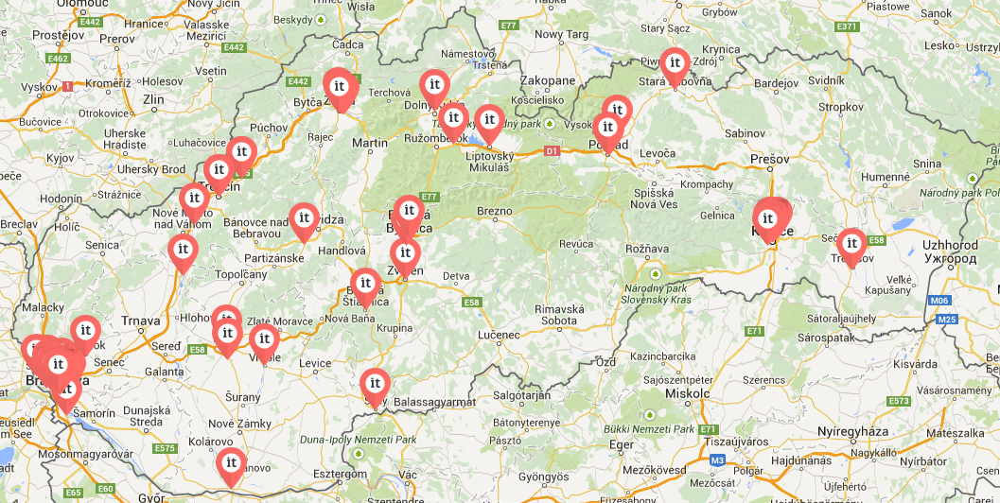

This website is a practical part of master's thesis Management of software projects. Part of management software projects is management of startups. Recently,you can hear more and more often the word startup, especially in Slovakia. Young generation is using this term very frequently. They often claim that starting own business is now "in". This was one of the major reasons to analyse this phenomenon. This website presents information about Slovakia startups according survey.
The website consists of 3 parts. First part is dedicated to startup definition. The second part presents the selected results of the KPMG startup survey. The last part presents selected results of our survey.
The term startup began popular in Slovakia and neighbouring countries in recent years. The popularity of the term began to grow abroad with massive spread of the Internet, which offers space for business for companies focusing on information and innovative technologies. Startup understand the new company or companies in the beginning, which is trying to reach the range by developing new technologies, products or services.
The map shows overview of slovak startups and even the site of company headquarters.
KPMG is international consultancy and audit company. Created and published survey about Slovakia startups in 2014 and focused on Innovation Driven Entities (IDE). IDE are companies that uses innovative technology and has a special business models. Each respondet was attribute to one of these categorie: Startup 37%, Corporates 38%, Public sector entities 13%, Organizations supporting startup 7% and Investors 5%.
For the presentation we selected some interesting results.
Startup survey 2014Survey was created by Google Docs, where are collected data from respondents. Information about the company was anonymous. Survey is divided into 4 parts: Background of the organisation, background of the project management software, background of the project manager and last part is dedicated to personal opinion.
For the website presentation we have choosed some interesting results of our survey. We divided respondents into two groups startups and long-acting organizations.The questionnaire was sent to 70 people but answered only 48 of them. 46% of respondents were from startup companies and organizations and 56% were from non-startup organization.
In the left part are the results about startups and in the right site are results about long-acting organizations.
Vertical values show the number of respondents and horizontal values show evaluation of respondents.
The scale consists of 5 steps: